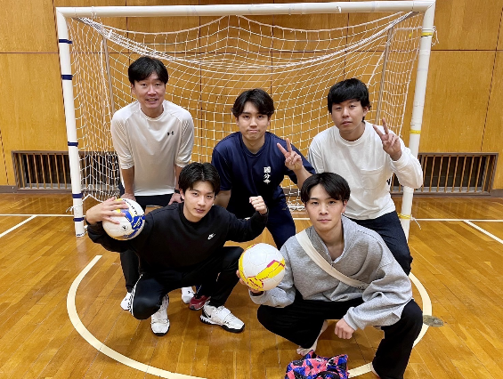
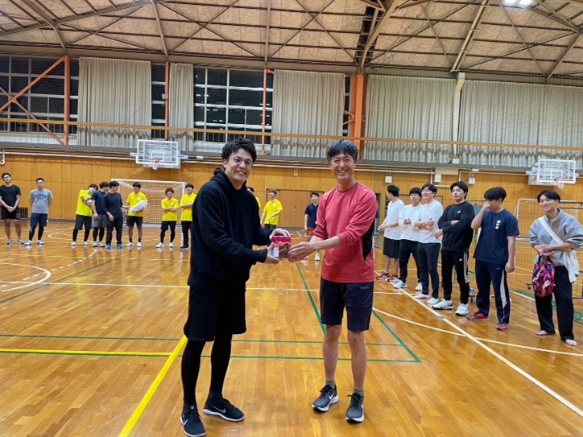

mizukan
イベント
岡村杯
11月5日(日), フットサル大会（岡村杯）に参加しました!
水工学研究室は留学生のニョマンや社会人の森さんを含む,
合計7人で参加しました!

大会には合計8つの研究室が参加しました!!
試合形式は,4チームごとに分かれリーグ戦を行い,勝ち上がった
2チームが決勝トーナメントに進めるというものでした!!

試合結果は,コンクリート研究室と地盤研究室が決勝で戦い,
1-2で主催者の岡村先生が所属する地盤研究室が優勝しました.
どの試合も白熱した戦いで面白かったです！('v`ｂ)
文責 村上